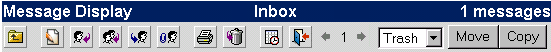
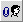
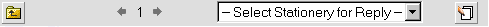

| Amikor
megnyitsz egy üzenetet
, egy új ikonsor jelenik meg, további lehetõségeket biztosítva az aktuális oldalnak megfelelõen.
Az üzenet ikonsor:

Referencia táblázat:
| Szöveg/Ikon |
Név/Alternatív szöveg |
Mûvelet |
 | Vissza | Visszalépés a mappa listájába |
|
| Új üzenet | Új levél írása* |
 | Válasz | Válasz levelet ír a feladónak. |
 | Válasz minden résztvevõnek | Minden feladónak válaszol, a továbbküldõknek is. |
|
 | Továbbítás | Az üzenet továbbítása egy harmadik fél felé csatolásként |
 | Nyomtatóbarát verzió | Megjeleníti a levelet nyomtatható verzióban |
 | Naptár | Megnyitja a naptárt |
|
| Kilépés | Kilép az OpenWebMailból |
További üzenet ikonok:
| Szöveg/Ikon |
Név/Alternatív szöveg |
Mûvelet |
![Import Address Book [sender]](../../images/buttons/add_address.gif) | Címek importálása [feladó] | A feladó címét a címtárhoz adja. |
 | Tiltja a levelet [feladó] | Tiltja a feladótól érkezõ leveleket, szûréssel. |
|
| Tiltja az SMTP relay-t | Tiltja az
SMTP
kapcsolatot az adott géppel (azzal a szerverrel amelyik elküldte az üzenetet) |
Van egy másik kis ikonsor a levél alatt:

A "Vissza" ugyanazt teszi mint a fenti ikonsoron. A balra és jobbra nyíl az "1" körül a mappa levelei közötti lapozást teszi lehetõvé (a balra nyíl az elõzõ üzenetre visz, a jobbra nyíl a következõre). A nyilak közötti szám adja meg hányadik levelet nézed éppen (az 1 az elsõ levelet jelenti a mappában).
A legördülõ menüben a nbsp; Mintalevél a válaszhoz szöveggel, lehetõséget ad a válaszhoz mintalevél használatára. A legördülõ listában láthatóak az általad létrehozott mintalevelek. Ha kiválaszottál egyet, válaszolhatsz a levélre a mintalevéllel. Ha még nincsenek mintaleveleid, kattints a mintalevél gombra (
 ) ahol létrehozhatod, illetve módosíthatod a mintaleveidet. A mintalevél definícióját lásd a
Beállítások ikonsornál
. ) ahol létrehozhatod, illetve módosíthatod a mintaleveidet. A mintalevél definícióját lásd a
Beállítások ikonsornál
.
* Ha a félretett mappában (lásd a
Mappák kezelését
) nézel egy levelet, ez a gomb szerkeszteni fogja a levelet, ahelyett hogy újat kezdene. |